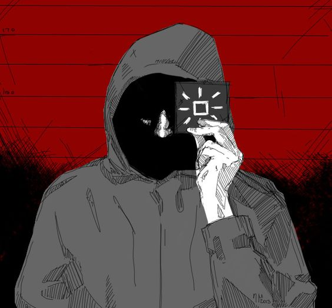
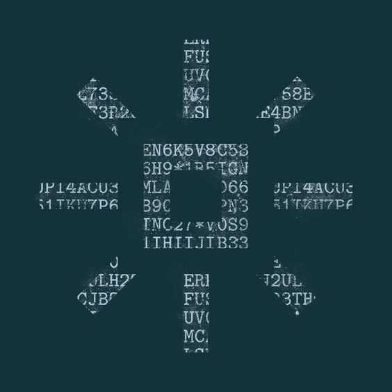

Buscados
Por dañar y destruir maliciosamente; Posesión de aparatos explosivos en apoyo de un crimen de violencia; intentar destruir y dañar por medios de explosivos edificios y otros bienes del gran estado de Arstrozka.

| Alias: | Mensajero |
| Logo: |  |
| Contextura: | Delgada |
| Altura: | 1.80 m |
| Edad: | S/D |
| Nacionalidad: | Kolechia |
| Peso: | 75 kg |
| Sexo: | Masculino |
Debe ser considerado armado y peligroso